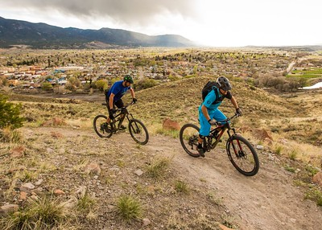

Hiking in Colorado
Mount Bierstadt
A common mistake many aspiring Colorado hikers make is to target Longs Peak before they have the fitness or experience to stack the odds of a successful summit in their favor. Here's where Mount Bierstadt comes into play. The popular 14,060' peak off of Guanella Pass near Georgetown is an accommodating 6-mile round trip along a well-maintained trail. It's a great starter mountain for those hoping to hike all of Colorado's 58 14,000'summits (the eponymous 14ers). More experienced hikers can test their mettle on Sawtooth Ridge, a 1-mile stretch of Class 3 rock that connects the summit of Bierstadt with the shoulder of 13,842 Mount Spaulding and eventually 14,264' Mount Evans. The typical descent back to Guanella Pass involves bushwhacking through moose-infested swampland, where 7-foot tall willows create a natural garden maze.

source: